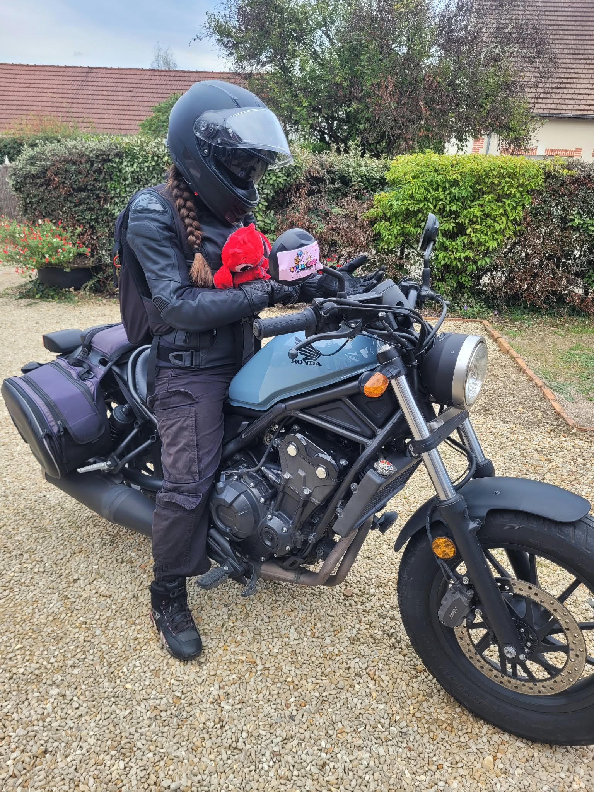

CE QUI ME PASSIONNE
Mes centres d'intérêt me permettent de développer de nouvelles compétences d'enrichir mon expérience personnelle et de vivre ma vie comme je le souhaite.
Plus qu'une passion, faire de la moto, est une raison de vivre. J'aime rouler qu'il fasse beau, ou qu'il pleuve. J'ai passé mon permis moto dès que j'ai pu que cela soit financier mais surtout au niveau de l'âge. A 14 ans, j'ai passé mon BSR afin de pouvoir conduire les motos de moins de 50 cc. Et à 18 ans j'ai passé le permis A2 qui me permet de conduire une moto jusqu'à 500cc soit 47,5 cv. A 20 ans, je passerai mon permis A pour pouvoir conduire tout type de moto.
Chaque année, je pars pour les 24h du Mans moto avec plusieurs amis motards et ces 2 heure de route sont vraiment les meilleurs, j'attends ce moment chaque année.
J'essai au maximum de rouler dès que je peux et quand le temps me le permet.

Découverte de nouvelles cultures et de nouveaux
environnements.
J'ai pu visiter plusieurs pays que cela soit en tant que voyage ou pour travailler.

Lire me permet d'enrichir mon vocabulaire, de découvrir de nouvelles choses souvent scientifiques et mécanique pour comprendre comment les choses fonctionnent. L'histoire m'interesse également énormement que ce soit celle des pays mais également du monde dans son ensemble.
← Retour à l'accueil